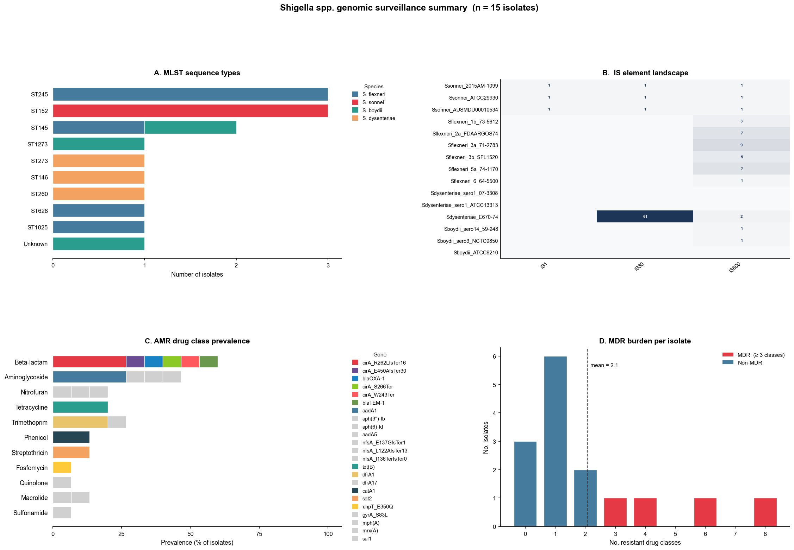
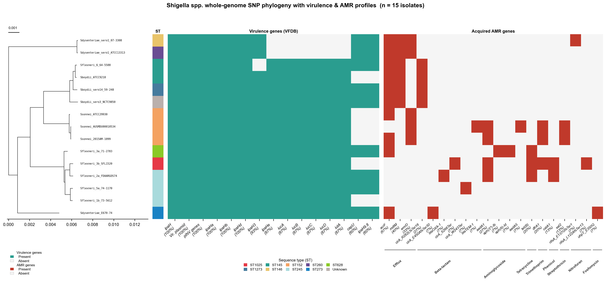
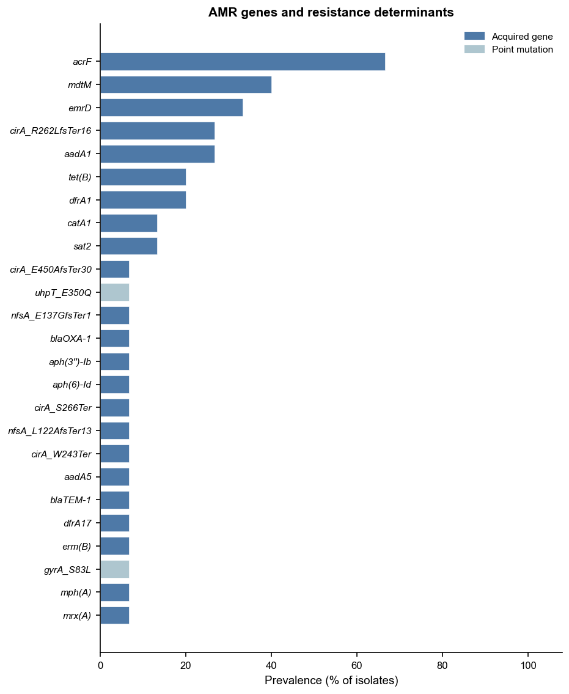
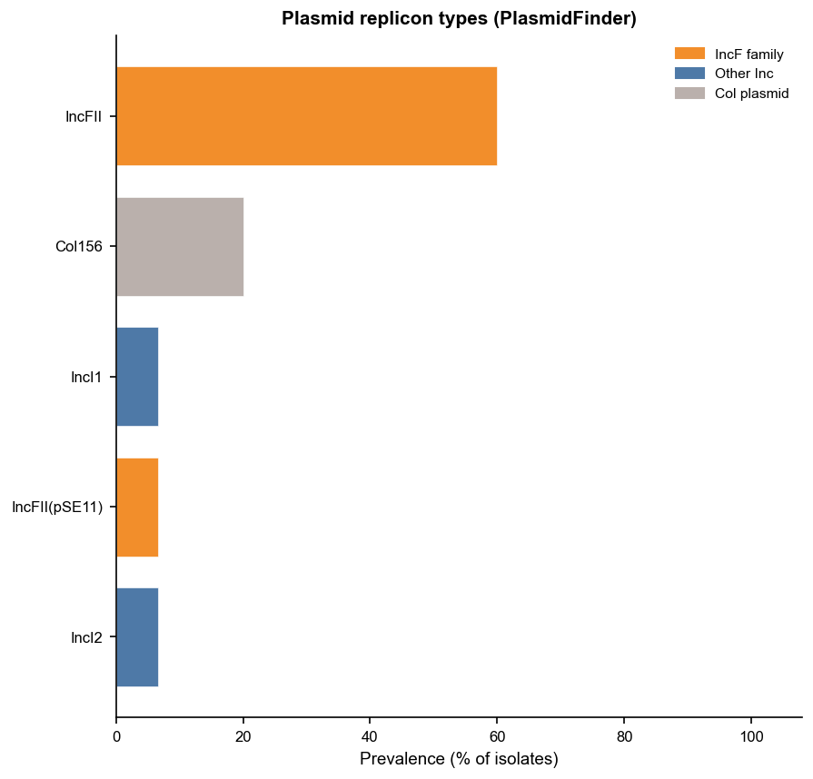
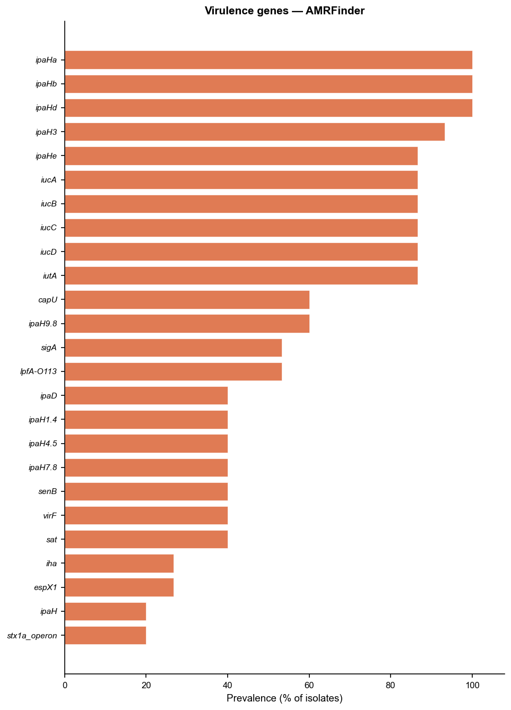
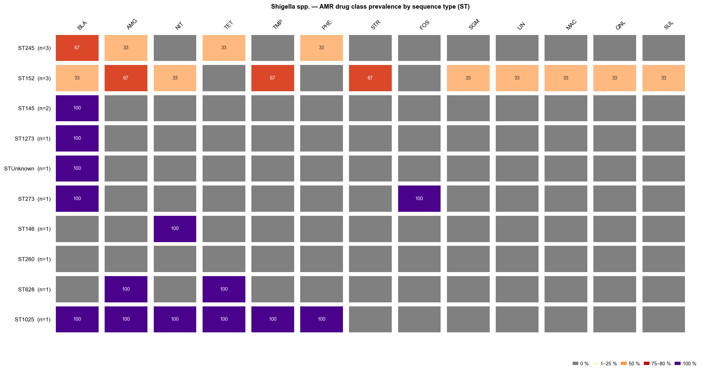
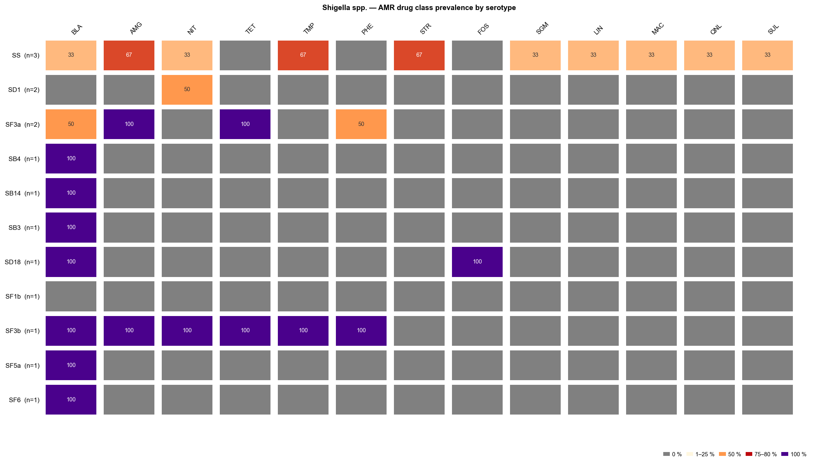
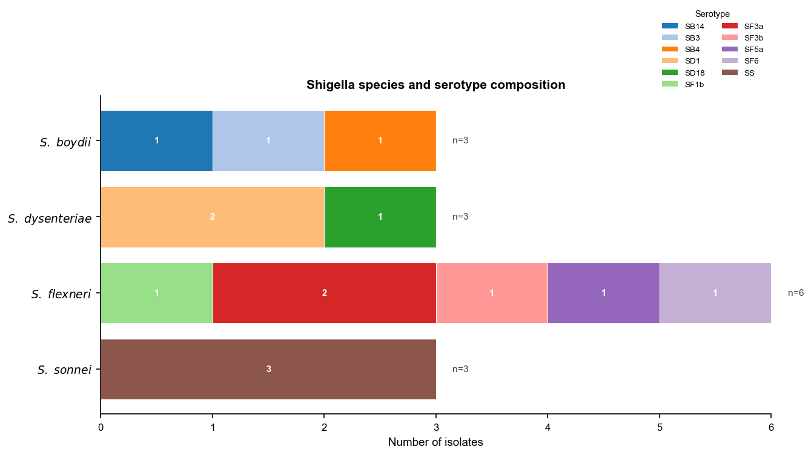
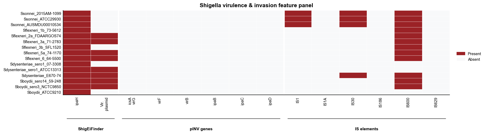
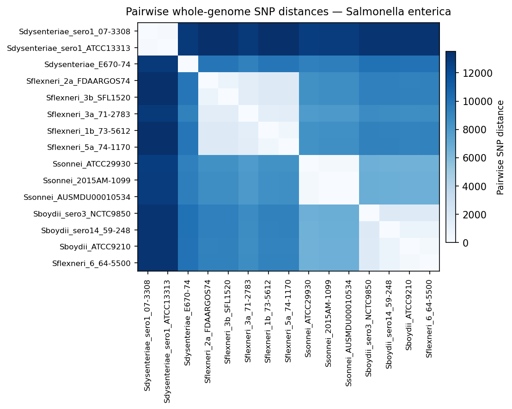

This vignette demonstrates the outputs produced by enteric-typer when run on 15 Shigella genome assemblies representing the four recognised species and a broad diversity of serotypes.
Genomes were downloaded from NCBI RefSeq/GenBank as publicly available reference and type-strain assemblies, selected to cover recognised serotypes across all four Shigella species. The set spans the major clades resolved by whole-genome phylogenetics and captures the serotypic diversity used to validate ShigEiFinder and Mykrobe genotyping within the pipeline.
| Attribute | Detail |
|---|---|
| Species | Shigella boydii (n = 3), S. dysenteriae (n = 3), S. flexneri (n = 6), S. sonnei (n = 3) |
| Isolates | 15 reference / type-strain assemblies |
| Source | NCBI RefSeq / GenBank |
| Typing | ShigEiFinder v1.3.5; Mykrobe v0.13 (S. sonnei / S. flexneri panel) |
| Sample | Species | ShigEiFinder serotype | MLST ST | Source |
|---|---|---|---|---|
| Sboydii_ATCC9210 | S. boydii | SB4 | ST145 | ATCC 9210 |
| Sboydii_sero14_59-248 | S. boydii | SB14 | ST1273 | Clinical isolate 59-248 |
| Sboydii_sero3_NCTC9850 | S. boydii | SB3 | Unknown | NCTC 9850 |
| Sdysenteriae_E670-74 | S. dysenteriae | SD18 (SDPE) | ST273 | Clinical isolate E670-74 |
| Sdysenteriae_sero1_07-3308 | S. dysenteriae | SD1 | ST146 | Clinical isolate 07-3308 |
| Sdysenteriae_sero1_ATCC13313 | S. dysenteriae | SD1 | ST260 | ATCC 13313 |
| Sflexneri_1b_73-5612 | S. flexneri | SF1b | ST245 | Clinical isolate 73-5612 |
| Sflexneri_2a_FDAARGOS74 | S. flexneri | SF3a | ST245 | FDA ARGOS isolate 74 |
| Sflexneri_3a_71-2783 | S. flexneri | SF3a | ST628 | Clinical isolate 71-2783 |
| Sflexneri_3b_SFL1520 | S. flexneri | SF3b | ST1025 | SFL1520 |
| Sflexneri_5a_74-1170 | S. flexneri | SF5a | ST245 | Clinical isolate 74-1170 |
| Sflexneri_6_64-5500 | S. flexneri | SF6 | ST145 | Clinical isolate 64-5500 |
| Ssonnei_2015AM-1099 | S. sonnei | SS | ST152 | Clinical isolate 2015AM-1099 |
| Ssonnei_ATCC29930 | S. sonnei | SS | ST152 | ATCC 29930 |
| Ssonnei_AUSMDU00010534 | S. sonnei | SS | ST152 | AUSMDU00010534 |
nextflow run main.nf \
-profile conda,arm64 \
--samplesheet test/shigella_vignette/samplesheet.csv \
--outdir shigella_results
The pipeline automatically routes all 15 assemblies to the Shigella arm based on Mash-distance species detection (Shigella-priority rule: any sample within Mash distance 0.025 of a Shigella reference is called Shigella, regardless of proximity to E. coli). This is important because S. sonnei and some S. flexneri are genomically nested within the E. coli species complex.
shigella_typer_results.tsv)One row per sample. Key columns:
| Column | Description |
|---|---|
mlst_st |
Achtman 7-gene MLST sequence type (ecoli_achtman_4 scheme) |
mlst_st_complex |
MLST ST complex (where defined; e.g., ST152 Cplx for S. sonnei) |
shigeifinder_ipaH |
ipaH invasion gene presence (+ / -) |
shigeifinder_virulence_plasmid |
pINV virulence plasmid copy number estimate |
shigeifinder_cluster |
ShigEiFinder cluster (C1, C2, C3, CSD1, CSS) |
shigeifinder_serotype |
Predicted serotype (SB, SD, SF*, SS prefix encodes species) |
shigeifinder_o_antigen |
Predicted O-antigen |
mykrobe_lineage / mykrobe_subclade |
Mykrobe lineage (covers S. flexneri and S. sonnei) |
amrfinder_acquired_genes |
Acquired AMR genes (intrinsic genes excluded) |
amrfinder_drug_classes |
Drug classes with acquired resistance |
plasmidfinder_replicons |
Plasmid replicon types |
pinv_present |
pINV invasion plasmid present (Y / N) by PCR-marker screen |
pinv_genes |
Individual pINV marker genes detected |
is_elements |
IS element types and copy numbers (e.g., IS600(7)) |
Figure 1. Population-level summary of 15 Shigella spp. reference assemblies.
Four panels are shown. (A) Sequence type (ST) distribution: horizontal bar chart
of MLST STs by isolate count (Achtman 7-gene scheme), coloured by Shigella species
inferred from ShigEiFinder serotype. ST245 is shared by multiple S. flexneri subtypes;
ST152 is the pandemic S. sonnei ST. (B) IS element landscape: compact heatmap of
IS element copy numbers per sample, sorted by species then serotype. IS600 is the
dominant mobile element across S. flexneri and S. boydii, consistent with its role
in serotype conversion and pathoadaptive evolution. (C) Acquired AMR drug class
prevalence: proportion of isolates carrying acquired resistance in each drug class
(intrinsic genes excluded). Beta-lactam and efflux resistance are near-universal due to
chromosomal cirA mutations and efflux pumps; acquired resistance to aminoglycosides,
tetracycline, phenicol, and trimethoprim reflects mobile element–mediated acquisition.
(D) Multi-drug resistance (MDR): proportion of isolates with acquired resistance to
≥ 3 drug classes.

Figure 2. Whole-genome SNP phylogeny of 15 Shigella spp. assemblies, annotated with sequence type, virulence gene presence/absence, and acquired AMR profiles. The maximum-likelihood tree was inferred by IQ-TREE 2 (GTR+G model, 1000 ultrafast bootstrap replicates) from a whole-genome SNP alignment generated by SKA2 (split k-mer alignment, k=31) without a reference genome. The left-most strip encodes sequence type (ST) with a colour per unique ST. Virulence gene columns (teal = present) show the extensive shared invasion machinery (ipaH, pINV, iucABCD aerobactin cluster) across all four species, with gene presence broadly concordant with phylogeny. Acquired AMR columns (red = present) reveal the multidrug-resistant S. sonnei ST152 clade (AUSMDU00010534 carrying resistance to 10 drug classes) and variable acquired resistance among S. flexneri subtypes. The scale bar represents substitutions per site.

Figure 3. Prevalence of acquired antimicrobial resistance genes across 15 Shigella
spp. assemblies.
Horizontal bar chart showing the number of isolates carrying each acquired AMR gene
detected by AMRFinder Plus (intrinsic genes excluded). Efflux pump genes (acrF,
mdtM, emrD) predominate, reflecting the constitutive efflux background in
Shigella. Beta-lactam resistance is driven by cirA frameshift and nonsense
mutations (chromosomal, classified as acquired in the context of clinical resistance)
and blaOXA-1 / blaTEM-1. Aminoglycoside resistance (aadA1, aph(3'')-Ib,
aph(6)-Id, aadA5) and tetracycline resistance (tet(B)) are carried primarily
on IncFII plasmids. The highly MDR S. sonnei AUSMDU00010534 contributes multiple
unique genes including gyrA_S83L (fluoroquinolone), erm(B) and mph(A)
(macrolide/lincosamide/streptogramin), sul1, and nfsA mutations (nitrofuran).

Figure 4. Prevalence of plasmid replicon types across 15 Shigella spp. assemblies. Horizontal bar chart showing the number of isolates in which each replicon type was detected by PlasmidFinder (Enterobacteriaceae database). IncFII is the dominant replicon, detected across S. boydii, S. flexneri, and S. dysenteriae, consistent with the pINV large virulence plasmid being IncFII-type in most lineages. Col156 is detected exclusively in all three S. sonnei isolates and is the characteristic small cryptic plasmid of the S. sonnei pandemic lineage. IncI1 and IncFII(pSE11) co-occur with heavy AMR burden in S. flexneri 3a and the MDR S. sonnei isolate respectively.

Figure 5. Prevalence of virulence factors across 15 Shigella spp. assemblies. Horizontal bar charts showing the proportion of isolates carrying each virulence gene or factor detected by AMRFinder Plus (VFDB). Core invasion machinery genes (ipaH homologues, iucABCD aerobactin biosynthesis, ipaHa/b/d) are near-universal. Shiga toxin genes (stxA1, stxB1, stx1a_operon) are restricted to the S. dysenteriae serotype 1 isolates, consistent with the known presence of the Stx1-encoding prophage in this serotype. Iron acquisition (iroB/C/D/E/N) is also exclusive to SD1.

Figure 6. AMR drug class prevalence by MLST sequence type (ST) across 15 Shigella spp. assemblies. Tile heatmap showing the percentage of isolates within each ST carrying acquired resistance to each drug class. ST152 (S. sonnei) shows the broadest resistance spectrum, reaching 100% prevalence for efflux and beta-lactam, and high prevalence for aminoglycosides, macrolides, quinolones, streptothricin, sulfonamides, and trimethoprim. ST245 (S. flexneri, multiple subtypes) shows variable resistance reflecting serotype-specific accessory genome differences.

Figure 7. AMR drug class prevalence by Shigella species across 15 assemblies. Tile heatmap showing the percentage of isolates within each species carrying acquired resistance to each drug class. S. sonnei exhibits the highest resistance burden across classes, consistent with the pandemic ST152 clone accumulating resistance through successive selective sweeps. S. dysenteriae shows beta-lactam and efflux resistance but lower acquisition of mobile resistance elements in this reference set. S. flexneri and S. boydii display intermediate resistance profiles.

Figure 8. Shigella serotype composition across 15 assemblies, stratified by species. Horizontal stacked bar chart where each bar represents a species and stacked segments show the proportion of each ShigEiFinder-predicted serotype. S. sonnei has a single serotype (SS). S. flexneri is represented by five serotypes (SF1b, SF3a, SF3b, SF5a, SF6) spanning the major subtype diversity. S. boydii and S. dysenteriae each show two serotypes (SB3/SB4/SB14 and SD1/SD18 respectively).

Figure 9. Shigella virulence and invasion feature panel for 15 assemblies. Binary heatmap (present = dark red, absent = white) showing three groups of features: ShigEiFinder markers (ipaH, virulence plasmid presence), pINV invasion plasmid marker genes (icsA/virG, virF, virB, ipaB, ipaC, ipaD), and IS element types (IS1, IS1A, IS30, IS186, IS600, IS629). All 15 isolates carry ipaH, confirming their classification as invasive Shigella. The absence of pINV marker gene calls reflects the detection thresholds of the marker-gene screen rather than biological absence. IS600 is the most widely distributed IS element, present in 10/15 isolates and particularly abundant in S. flexneri 3a (9 copies) and 2a (7 copies), consistent with IS600-mediated serotype conversion events. IS30 at very high copy number (61 copies) in S. dysenteriae E670-74 is consistent with its documented role in genome rearrangements in this lineage. IS1 is restricted to S. sonnei.

Supplementary. Pairwise whole-genome SNP distance heatmap for 15 Shigella spp. assemblies. Symmetric heatmap of pairwise SNP distances from the SKA2 whole-genome alignment. Samples are ordered by hierarchical clustering. The four Shigella species form clearly separated blocks, with the closest distances within S. flexneri ST245 subtypes and within S. sonnei ST152 (all three isolates highly related). Larger inter-species distances reflect the deep divergence between Shigella lineages, which span approximately 25,000–50,000 SNPs across the core genome.
